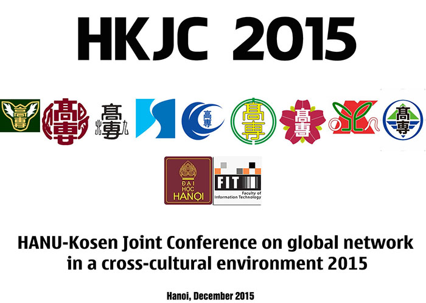

Call for papers

Research is an essential aspect of a college/university student. In order to promote doing research amongst students as well as to enable a cultural exchange environment between students from different countries, the 2015 “HANU-Kosen Joint Conference on global network in a cross-cultural environment (HKJC 2015)” is held at Hanoi - Vietnam on December 10th and 11th. Specifically, the objectives of the conference include creating an opportunity of presentation in English for both graduate and undergraduate students, enabling students to experience diverse cultures and build a global network in a cross-cultural environment and providing students with networking opportunities, knowledge and ideas on research and international exchange among faculties.
The participants consist of:
- Graduate and undergraduate students in HANU and other universities in Hanoi.
- Students of advanced courses at 9 Kosen in Kyusyu and Okinawa area.
- Faculty members from HANU and Kosen.
- Mechanical and Electrical, Electronics, and Optics
- Computer science & Information
- Chemical, Molecular, and Biotechnology
- Civil, Architecture, and Design
- Languages and Cultures
Submission guidelines
Important Dates
- 15 November 2015: Paper submission deadline
- 20 November 2015: Completion of peer review
- 30 November 2015: Camera ready
- 10-11 December 2015: Conference
- 15 December 2015: Publication
Contact information
Faculty of Information Technology, Hanoi Univeristy.
Tel: +84 435 430 267
E-mail: nxthang@hanu.edu.vn
National Institute of Technology, Kumamoto College.
E-mail: shimoshio@kumamoto-nct.ac.jp